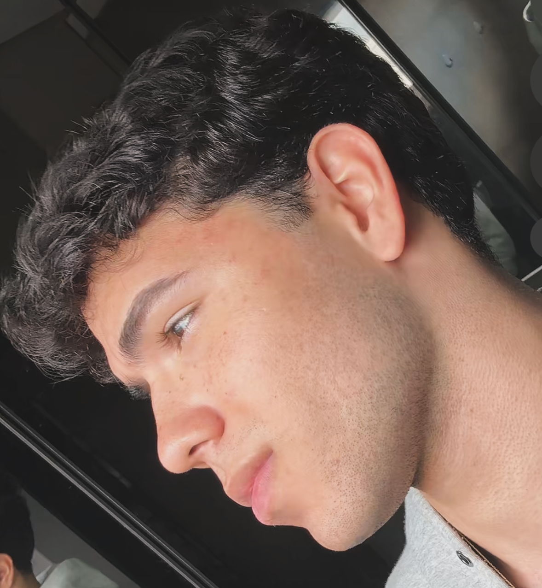

Fase 01
Fase 01
Base bruta
Ponto de partida. Aqui entram as primeiras fotos, sem tentativa de parecer perfeito: rosto, cabelo, pele, físico, postura, barba, estilo e presença geral. É a fase de diagnóstico estético.
protocolo privado de transformação estética
Este é meu diário público de transformação masculina: dieta baseada em comida de verdade, treino, pele, cabelo, postura, estilo, fotos e presença visual. A proposta não é vender um milagre. É documentar uma construção estética real, por , com método, repetição e refinamento.

Esta foto é o ponto de entrada. As próximas s serão registradas com imagens, descrição objetiva e ajustes feitos em cabelo, pele, shape, estilo e dieta.
linha do tempo
A transformação será registrada como um experimento visual. Cada terá uma foto, uma descrição honesta do estado atual e os ajustes feitos no período. O objetivo é comparar evolução real, não manipulação de ângulo, luz ou edição.
Fase 01
Ponto de partida. Aqui entram as primeiras fotos, sem tentativa de parecer perfeito: rosto, cabelo, pele, físico, postura, barba, estilo e presença geral. É a fase de diagnóstico estético.
 Fase 02
Fase 02
Correção dos erros mais visíveis: cabelo sem forma, pele negligenciada, roupa com caimento ruim, postura fraca, excesso de ruído alimentar e aparência cansada.
 Fase 03
Fase 03
A fase em que o rosto começa a parecer mais definido, o shape ganha presença, o estilo fica mais coerente e a rotina começa a refletir diretamente na imagem.
 Fase 04
Fase 04
Ajuste fino: cabelo, barba, pele, fotos, roupas, expressão, postura, composição corporal e consistência. Aqui o objetivo deixa de ser “melhorar” e passa a ser manter padrão.
Esta linha do tempo documenta minha transformação de forma direta: rosto, físico, cabelo, postura, estilo e presença visual. A primeira fase mostra uma base mais crua, com cabelo raspado, menor construção estética e uma imagem ainda pouco refinada. A partir dela, o foco passou a ser criar estrutura: melhorar o shape, reduzir ruído visual, testar cabelo, ajustar estilo e construir uma aparência mais forte.
Na evolução corporal, a mudança principal aparece na relação entre ombros, peitoral, abdômen e cintura. O físico começa mais simples e seco, ainda sem tanta presença visual, e progride para uma aparência mais atlética, com melhor definição, mais volume em tronco superior e uma imagem mais compatível com o objetivo do protocolo.
No rosto, a mudança mais evidente vem do refinamento. O cabelo deixa de ser apenas funcional e passa a atuar como moldura facial. Os óculos, o corte, a expressão e a forma como a foto é construída passam a comunicar mais intenção. O objetivo não é parecer outra pessoa, mas remover o excesso de descuido e revelar uma versão mais limpa, estética e controlada.
Essa transformação não será apresentada como milagre. Cada fase representa ajustes acumulados: treino, alimentação, pele, cabelo, postura, estilo, fotos e consistência. O protocolo nasce justamente dessa ideia: aparência não muda por sorte, muda quando cada detalhe começa a ser tratado como parte de um sistema.
nutrição estética
A base alimentar do projeto segue uma lógica simples: proteína animal de alta densidade nutricional, frutas como fonte de carboidrato simples e palatável, gorduras de melhor qualidade e redução agressiva de ultraprocessados. Não é uma religião alimentar. É uma estrutura prática para energia, saciedade, treino e aparência.
A carne vermelha entra como alimento central pela densidade de proteína, ferro, zinco, creatina, B12 e saciedade. A regra é priorizar cortes de verdade e evitar transformar isso em dieta de bacon, embutido e ultraprocessado.
Frutas entram como carboidrato de melhor qualidade para treino, glicogênio, palatabilidade e adesão. Banana, laranja, manga, abacaxi, melancia, uva e frutas vermelhas podem ser usadas conforme tolerância digestiva e objetivo calórico.
O foco não é encher a dieta de gordura sem critério. A ideia é usar ovos, azeite, abacate, peixes gordurosos, castanhas em porções controladas e a própria gordura natural dos alimentos, sem exagero crônico de gordura saturada.
Mel pode funcionar como carboidrato rápido antes do treino ou em refeições estratégicas, mas não deve virar desculpa para consumo descontrolado de açúcar. A dose precisa servir ao treino, não ao vício em doce.
Leite, iogurte, kefir e queijos podem funcionar muito bem para alguns e piorar acne, digestão ou retenção em outros. A regra é testar, observar pele/intestino e manter apenas o que melhora sua aparência e performance.
O maior “segredo” continua sendo o menos glamouroso: retirar refrigerante, fritura, biscoito, doces diários, álcool frequente, fast-food e comida hiperpalatável. Isso sozinho já muda pele, rosto, retenção e composição corporal.
Este protocolo não substitui nutricionista, médico ou avaliação individual. Pessoas com dislipidemia, diabetes, doença renal, doença hepática, histórico cardiovascular, compulsão alimentar ou uso de medicações devem fazer acompanhamento profissional antes de mudar a dieta.
o método
Looksmaxing não é só “ficar bonito”. É reduzir pontos fracos visuais, aumentar sinais de saúde, melhorar presença social e construir uma imagem que pareça intencional.
Corte compatível com formato do rosto, textura, densidade capilar e estilo pessoal. O cabelo é moldura do rosto: quando está errado, todo o resto parece pior.
Limpeza, hidratação, proteção solar e controle de acne/oleosidade. Pele boa não é detalhe: é um dos maiores sinais visuais de saúde, higiene e juventude.
Treino de força, composição corporal, ombros, cintura, pescoço, postura e condicionamento. O shape muda a forma como roupas caem e como o rosto é percebido.
Carne, ovos, frutas, boas gorduras, sal suficiente, água e menos ultraprocessados. A dieta não aparece só no abdômen: aparece na pele, no rosto, na energia e no olhar.
Roupas com caimento, cores coerentes, tênis limpo, acessórios discretos e estética alinhada ao ambiente. Estilo é correção visual de baixo custo.
Hálito, odor, unhas, barba, sobrancelha, cabelo limpo, pele sem aspecto oleoso e roupas bem cuidadas. O básico, quando negligenciado, destrói qualquer potencial estético.
Postura, olhar, expressão facial, fotos, tom de voz, linguagem corporal e calma. Aparência também é como você ocupa o espaço.
regras internas
O método não depende de motivação. Depende de regras simples, repetidas por tempo suficiente para que a aparência comece a denunciar a rotina.
Aparência é comunicação. Seu rosto, pele, cabelo, roupa e postura transmitem informação antes de qualquer palavra.
Antes de procurar hacks, remova sono ruim, comida lixo, álcool frequente, sedentarismo, cabelo descuidado e pele negligenciada.
O espelho perdoa. A câmera não. Por isso a evolução será medida em fotos, sempre com comparação justa e iluminação semelhante.
Composição corporal, retenção, inflamação percebida, sono e treino alteram nitidez facial, olhar e presença geral.
Cabelo limpo, pele cuidada, roupa ajustada, bom cheiro, postura e shape decente já colocam você acima da média visual.
Não adianta fazer tudo por 10 dias e sumir por 3 meses. O protocolo precisa caber na vida real para gerar resultado visual sustentável.
produto digital
Um guia direto para quem quer parar de consumir conteúdo solto e começar a organizar a própria evolução estética. A ideia é transformar aparência em sistema: diagnóstico, rotina, execução e registro visual.
Em breve: versão com PDF, checklist de fotos, lista de compras e protocolo semanal.
análise individual
Para quem quer uma análise mais direta da própria aparência: fotos, cabelo, pele, barba, shape, estilo, postura, perfil de Instagram e prioridades de mudança.
Foto frontal, perfil, sorriso, cabelo, sobrancelha, barba, pele, roupas, composição corporal, postura, presença visual e pontos de maior retorno estético.
registro social
Esta área será preenchida apenas com relatos reais e autorizados. Sem depoimento inventado, sem antes e depois falso e sem promessa de resultado garantido.
“Espaço reservado para depoimento real de alguém que aplicou o protocolo.” — Aluno/Cliente
“Espaço reservado para relato autorizado sobre evolução de aparência, estilo ou rotina.” — Aluno/Cliente
dúvidas comuns
Não exatamente. A proposta é mais próxima de uma abordagem baseada em comida de verdade: carne, ovos, frutas, boas gorduras e baixa presença de ultraprocessados. Não é uma dieta religiosa e não exige excluir todos os vegetais se eles funcionam bem para você.
Não. O objetivo é usar carne vermelha como uma fonte nutritiva de proteína, não como licença para exagerar em gordura saturada, embutidos ou carnes processadas. Quantidade, exames, histórico familiar e contexto individual importam.
Frutas têm água, fibras, micronutrientes e matriz alimentar diferente de doces ultraprocessados. Mel pode ser usado como ferramenta energética, principalmente perto do treino, mas ainda precisa de dose e contexto.
Não. O conteúdo é educativo e baseado em experiência pessoal, organização de rotina e estética masculina. Problemas de pele, queda de cabelo, alterações hormonais, exames ruins, diabetes, colesterol alto ou qualquer doença precisam de avaliação profissional.
Não. O site documenta método, rotina e evolução visual. Resultado depende de genética, constância, saúde, sono, alimentação, treino, execução, contexto e tempo.
Acompanhe as fases do site, Instagram e atualizações do protocolo. A ideia é mostrar o processo real: o que foi feito, o que funcionou, o que não funcionou e como a aparência mudou.